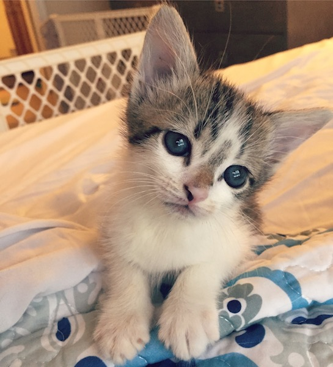
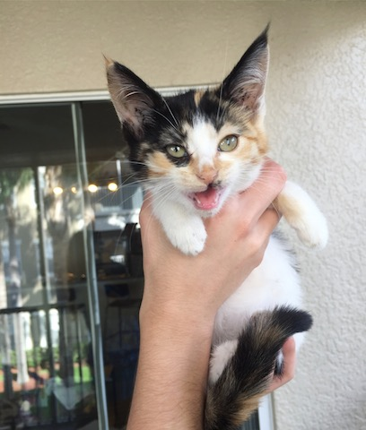
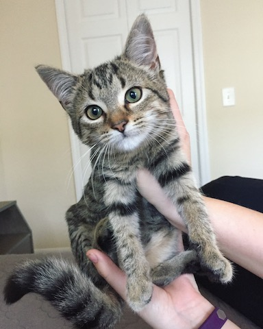

Our Current Foster Kittens
Cannoli

Born: November 8
Origin: Cannoli was rescued at one day old, as the only surviving member of his litter. His mom cat needed emergency surgery and would be unable to nurse or care for him.
Carrie

Born: October 19
Origin: Carrie showed up on a front porch in Orlando, covered with fleas, filled with worms, but gentle and loving nonetheless! She is one of the least feral kittens we have ever seen and has incredible, long Angora fur.
Cocoa

Born: October 10
Origin: Cocoa is the sister of our former fosters, Cider and Cherry! She looks less Maine Coon, but is gorgeous, soft, and every bit as sweet as they are. She loves to be held and give licks.